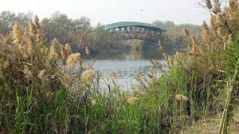
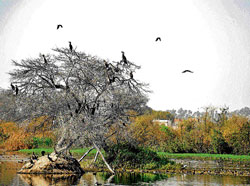
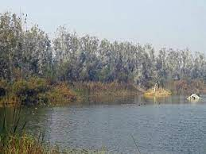

  
Yamuna biodiversity park, located on Yamuna river front is a 9770 hectares biodiversity area in Delhi, India. It is developed by Delhi Development Authority (DDA) with the technical help of Centre for Environmental Management of Degraded Ecosystems (CEMDE), University of Delhi.[6] It serves as an ideal alternative habitat for migratory and resident bird species. It also is designed to conserve the wild genetic resources of agricultural crops and enhance groundwater recharge and augment freshwater availability. Delhi has 7554 hectares of fragmented forests which are deprived of wild animals due to unplanned urbanisation, and of the 400wetlands, fewer than 3 or 4 were left. In 2015, Delhi already had Aravalli Biodiversity Park and Yamuna biodiversity park. DelhiDevelopment Authority (DDA) engaged the scientist of Delhi University to develop four more biodiversity parks in Delhi, includingthe Northern ridge biodiversity park (Kamla Nehru Ridge), Tilpath Valley Biodiversity Park, Neela Hauz biodiversity park andphase-2 of the Yamuna Biodiversity Park. Phase-I of Yamuna biodiversity park focused on barren floodplains commenced in 2005and phase-2 focused on the active floodplains commenced in 2015. In 2005 restoration of floodplains of Yamuna commenced, which had been lying barren due to sodic soil making it difficult for plants to grow. In Phase-I, 157 acres ecosystem was restored by developing two wetlands, a grassland and forest communities. Native plant species were reintroduced to reduce the salt content in the soil.[7] The pH level (scale of acidity) of the soil was not neutral and detrimental to the success of the native Indian plants. Researchers form Delhi University had to plant one specific species of grass that brought the pH level from 10 to seven (neutral) level.